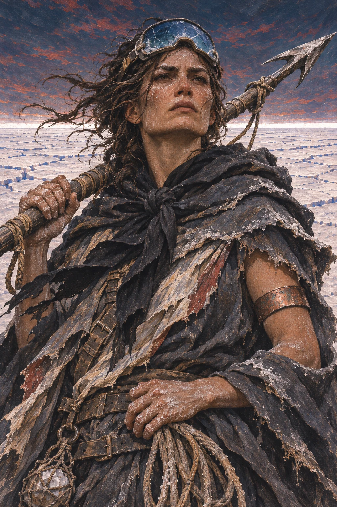
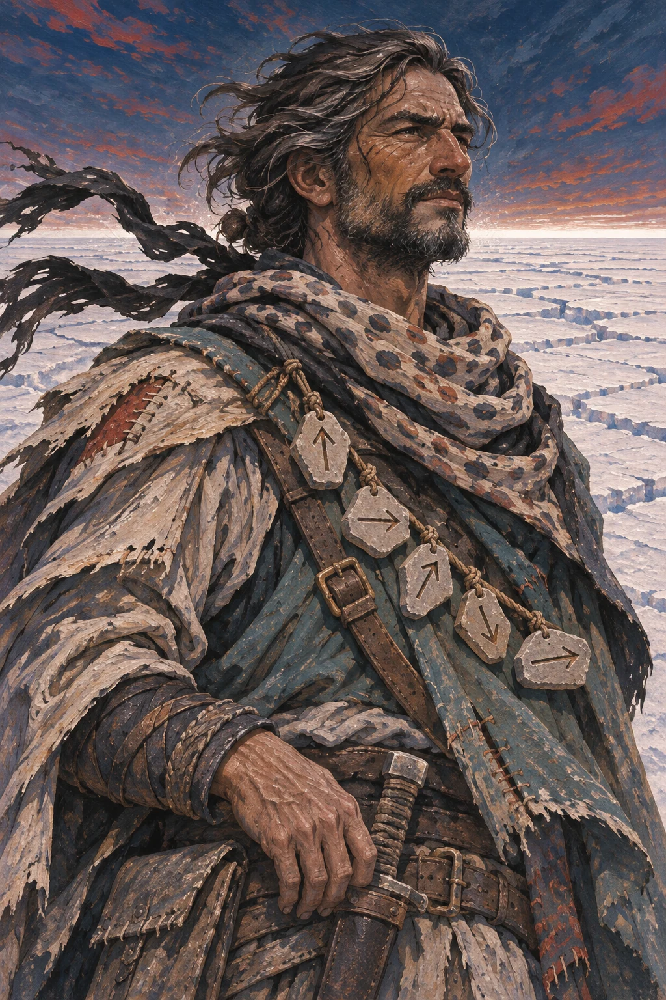
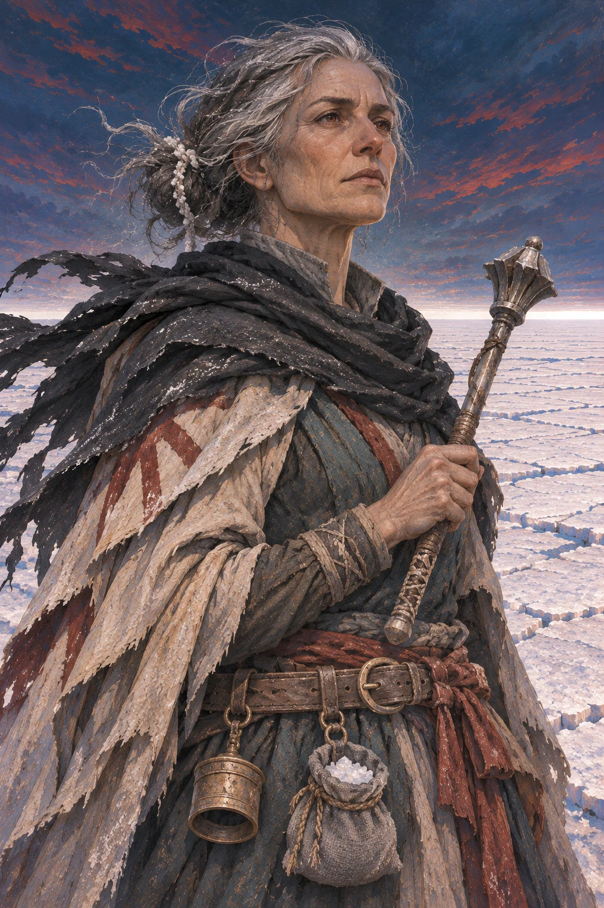
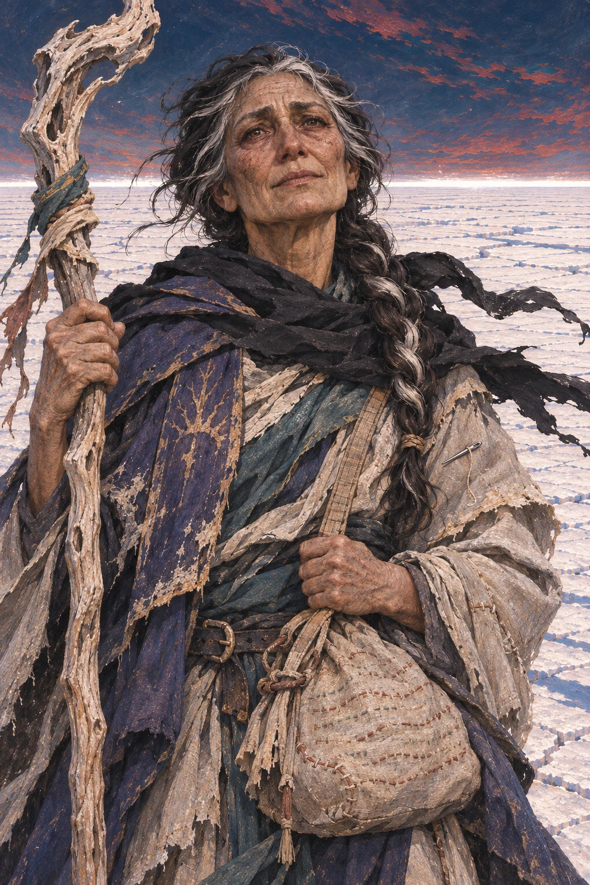

Мир и начало
Соль Отлива — белое дно бывшего моря: корка соли поверх густого рассола, каменные острова, исполинские старые раковины, торчащие из пласта, как дома. Ладьи ходят по дну на полозьях под парусом; ветер над дном дует почти всегда с запада на восток. Воду меняют на работу и долги. Чёрные пластины панциря Белореза идут на дорогое ночное стекло. Две артели — «Чёрная Сеть» Гордеи Вар и «Сухие Зубья» Радана Косого — враждуют из-за тех, кто погиб у Клыка Бурь. Вдовьи платки висят на мачтах, на дверях и на вешках вдоль троп. Все человеческие участники истории совершеннолетние. Правила героев — поддерживаемые классы третьего уровня; охотничьи ремёсла служат художественным описанием.
Сорок лет назад море ушло, и в Пороге Вдов давно никто не спорит, куда. Осталось дно — белое, как выскобленная кость, от старого берега до самого края неба: корка соли поверх густого рассола, каменные острова, исполинские раковины, торчащие из пласта, будто дома, в которых никто не живёт. По этому дну ходят ладьи — на полозьях, под парусом, и ветер почти всегда тянет их с запада на восток. Под коркой, как рыба подо льдом, плавает Белорез. Над солью видно только его гребень — белое лезвие, которое режет корку с треском рвущейся парусины. Его чёрные пластины идут на ночное стекло, дорогое, как вода, а воду здесь меняют на работу и на долги.
Порог Вдов стоит над бывшим берегом. Сорок вдовьих домов, на каждой двери чёрный платок с белой каймой соли; такие же платки висят на мачтах и на вешках вдоль троп, по одному на каждого, кто ушёл под соль. Две артели — «Чёрная Сеть» Гордеи Вар и «Сухие Зубья» Радана Косого — не садятся у одного огня с тех пор, как у Клыка Бурь погибли люди, и каждая винит другую.
Охоту здесь делят заранее. На площади, на столе долей, распята шкура-карта дна, и капитаны режут её ножами — кому какая доля будущей добычи. Седьмую долю в Пороге отдают чужим. Вам достаются ладья «Седьмая доля», шлюпки, стойка гарпунов, бочки воды и восемь дней похода. Порог платит за возвращение, если вернувшийся точно расскажет, где шёл. За смерть, говорят на площади, платят только песнями.
Сегодня утро раздела. Над площадью хрустит соль на ветру, у стола долей уже стоят капитаны — Гордея Вар в квадратных стеклянных очках и Радан Косой в потрёпанном белом капюшоне, — за их спинами молчат охотники, и Оксинья Брусова, которая ведёт счёт долей и воды, раскладывает рядом со шкурой семь ножей — по одному на долю.

34 лет · воин · уровень 3
Дерва Клин
Рулевая шлюпки и охотница с долгим линём
Тёмный плащ, защитная маска из синего стекла, вытертый медный ободок на руке; на ладонях соль въелась в трещины.
Твоя супруга Любава (31) погибла два сезона назад в седьмой доле, на отходе от Котла. Тебе остались медный ободок и её гарпун с ясеневым древком и долгим линём, на пятке вдовий узел. Ты снова берёшь седьмую долю, чтобы пройти той же дорогой и вернуться. Если тема тяжела, утрату можно заменить гибелью товарища.
Связь
Тарон вёл тот отход, Сельма хоронила седьмую долю. Ты пришла на площадь вместе с ними и не хочешь опять выбирать, кого оставить.
В центре внимания
Ты у руля шлюпки и у гарпуна с долгим линём; споришь о цене риска и выбираешь позиции и пути отхода. Другие герои умеют делать это и без тебя.
Личный вопрос
Что ты действительно обещала умершей: отомстить за неё или не забывать, как она жила? Ответ не задан заранее.

41 лет · плут · уровень 3
Тарон Веха
Следопыт соляного дна
Пятнистый шарф, связка плоских каменных меток со стрелками и сапоги с разноцветными заплатами.
Два сезона назад ты назвал отход по Вдовьей черте безопасным, не проверив его. Борозды Белореза ты читаешь лучше всех в Пороге и теперь хочешь заслужить доверие поступками, а не словами.
Связь
Дерва знает цену твоим обещаниям. Сельма просит тебя говорить «не знаю», когда это правда. Вы вместе пришли на площадь узнать условия новой охоты.
В центре внимания
Читаешь борозду, ставишь каменные метки и объясняешь группе простыми словами, что видишь. Любое чтение следа доступно и другому наблюдателю.
Личный вопрос
Сможешь ли ты признать предел своих знаний раньше, чем кто-то снова заплатит за твою уверенность?

50 лет · жрец · уровень 3
Сельма Ров
Погребальная служительница и спутница живых
Серые волосы, собранные соляной нитью; на поясе моток соляной нити, обломок старого гарпунного зуба и мешочек крупной серой соли.
Ты хоронила седьмую долю и знаешь каждое имя, вышитое на вдовьих платках Порога. Вдовы дали тебе семь платков и погребальную соль. На охоту ты идёшь, чтобы рядом с жаждой возмездия нашлось место заботе о тех, кто возвращается. Если тема тяжела, вместо похорон седьмой доли может быть утрата общины или ремесла.
Связь
В Дерве и Тароне ты видишь живых людей, а не остаток мёртвой артели. На площадь вас привело общее решение, а не обряд.
В центре внимания
Говоришь с вдовами и теми, кто остался, солишь кровь и читаешь платки на черте. Ни один разговор и ни один обряд не требует твоего класса.
Личный вопрос
Когда утешение помогает пережить утрату, а когда позволяет ничего не менять?

28 лет · волшебник · уровень 3
Эйран Лист
Исследователь поющей соли
Пыльные очки, перчатки разных цветов и деревянный футляр с обычными камнями; на манжетах следы соли и угля.
Ты изучаешь чёрное ночное стекло, которое варят из линьки левиафана, и хочешь увидеть, откуда оно берётся, а не только готовую пластину. Обещал себе не превращать спутников в материал для опыта.
Связь
Сельма однажды выслушала твою лекцию целиком; теперь ты обязан так же внимательно слушать её сомнения.
В центре внимания
Сравниваешь пластины и надписи, объясняешь устройство орудия проверяемыми словами. Всё это читается и без заклинаний; вести записи может любой.
Личный вопрос
Какое знание ты согласишься не получить, если цена станет слишком высокой?

37 лет · воин · уровень 3
Ната Уголь
Защитница рабочих стоянок
Короткая стрижка, щит со стёртым знаком артели и тщательно сложенные рукавицы; на плечах следы лямок.
Ты много лет прикрываешь чужие отступления и слишком часто видела, как сборщиков Порога посылают за пластинами первыми. На эту охоту пошла ради взрослых работников, которым нужен безопасный берег, а не красивый рассказ о победе.
Связь
Дерва делила с тобой ночное дежурство и умеет замечать, когда ты устала. Ты надеешься позволить ей делать то же для тебя.
В центре внимания
Держишь палубу, выводишь людей из рассола и спрашиваешь, кого защищает план. Обязанности жертвовать собой по умолчанию у тебя нет.
Личный вопрос
Кому ты позволишь позаботиться о тебе, когда снова захочешь остаться последней?

24 лет · плут · уровень 3
Воск Рез
Бывший делец трофеями
Аккуратная куртка поверх дорожной пыли и пустое кольцо для дорогого трофея; соль на манжетах стёрта до блеска.
Ты продавал Оксинье Брусовой чёрные пластины и знаешь цену каждой, а ещё умеешь рассказывать истории, которые стоят дороже самих обломков. Теперь хочешь заработать честную долю для своей взрослой сестры, оставшейся на берегу.
Связь
Тарон поймал тебя на преувеличении, но помог исправить последствия без унижения. Ты хочешь так же честно относиться к чужим ошибкам.
В центре внимания
Разбираешь условия долей и обмена, называешь цену пластин и предлагаешь возмещение вместо новых обещаний. Эти знания доступны всей группе.
Личный вопрос
Какая часть твоего будущего зависит от чужой веры в красивую ложь?

60 лет · жрец · уровень 3
Рива Ночь
Хранительница обычных имён умерших
Тёмная коса с белыми прядями и полотняная сумка с вышитыми именами; иголка воткнута в рукав.
Ты овдовела задолго до этой охоты и сама вышивала имена на нескольких платках Вдовьей черты. Привыкла говорить с живыми о смешных чертах покойных. Готова записывать имена, но не отдавать их в чужую собственность. Если тема вдовства тяжела, замените её утратой дома или учеников.
Связь
Сельма училась у тебя слушать молчание. Ты надеешься, что она напомнит тебе: собственная скорбь не даёт права решать за других.
В центре внимания
Ведёшь разговоры об именах мёртвых и о будущем ремесле, читаешь вышивку на вешках. Читать платки может любой, а делиться утратой ради твоей сцены никто не обязан.
Личный вопрос
Можешь ли ты принять чужой способ горевать, не поддерживая причиняемый им вред?